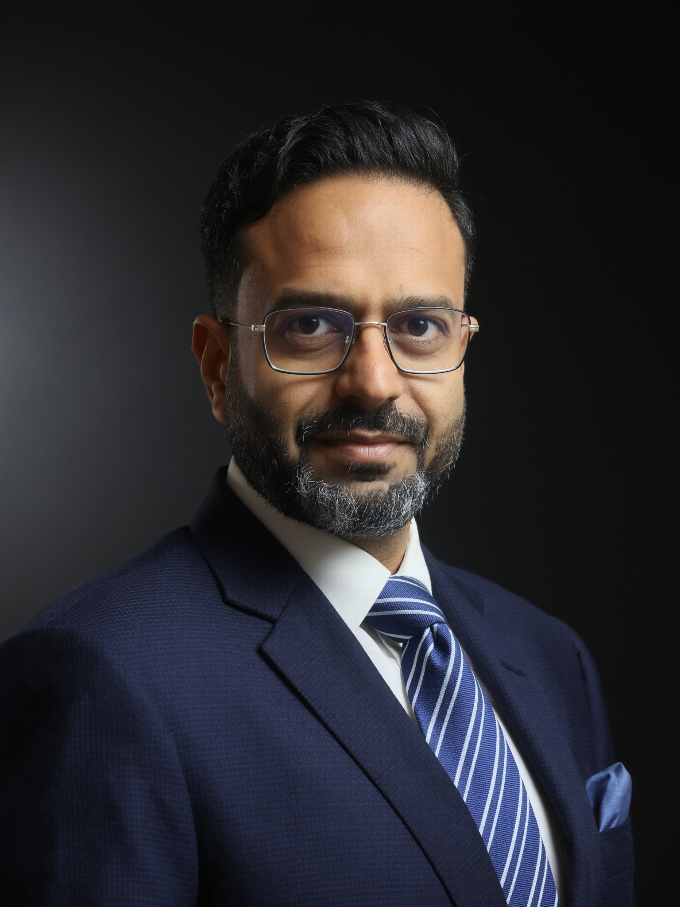

Twenty years across Emirates Properties Group, Adeeb Group, Deyaar Development, and Dubai South — and almost as many spent training the people who'll lead the next twenty.

Fahad Mohamed currently serves as Director – Facilities Management at Emirates Properties Group, where he also leads the construction-to-operations transition for AZHA Community and the infrastructure upgrade programme for Emirates City Master Community. It is the latest chapter in a career built on a single conviction: facilities management is not maintenance work, it is a strategic lever for enterprise value, sustainability, and stakeholder trust.
Across roles at Adeeb Group, Deyaar Development, and Dubai South, Fahad has governed portfolios spanning commercial, residential, retail, education, government, aviation, and master-community assets — building the kind of operational and commercial fluency that comes only from sitting across the table from boards, regulators, owners' committees, and clients, simultaneously.
He is a Chartered Member of IWFM, a MEFMA Certified Trainer actively shaping FM professional standards across the UAE, and Dubai Quality Award recipient (2017) for Operational Excellence and Community Satisfaction. His current focus — and the subject of his book — is what ESG, digital transformation, and disciplined governance look like when applied at real scale, not in theory.
Nearly as long as he has led operations, Fahad has trained the people delivering them — building capability frameworks, induction programmes, and technical grooming standards for in-house teams, and, through MEFMA, for the wider FM industry across the UAE.
Not a list of job titles — a record of what changed because he was in the room.
At Emirates Properties Group, Fahad now holds a mandate few FM leaders are trusted with in one seat — full authority across the group's entire owned portfolio, from commercial towers to master-community infrastructure. Within his first six weeks, he had audited an inherited team, redrawn accountability lines, and set the digitisation roadmap now shaping how AZHA Community and Emirates City are built, handed over, and run for the next decade.
Five years directing national FM operations sharpened a rare instinct for pairing commercial discipline with operational depth. Fahad governed nine-figure contracts across government, aviation, and education, held a 96% client renewal rate through some of the sector's hardest negotiations, and turned CAFM and ERP rollouts into double-digit gains in service reliability and cost efficiency alike. It was also here that his published voice took shape — six industry articles for CM-Today's Expert Talk series between 2022 and 2023.
Eight years shaping how Dubai's premium communities are governed. Leading FM and Owners Association operations across 30-plus communities worth more than AED 4 billion, Fahad rebuilt the trust between developers, owners, and regulators — cutting energy use by a third, halving billing cycle times, and earning the Dubai Quality Award for it in 2017.
The years that built the foundation. Running integrated FM across some of Dubai's most recognisable addresses — 23 Marina, Elite Residence, Dubai South Master Community — Fahad learned early what audit-grade service actually requires: zero major non-conformities across every ISO-certified portfolio he touched.
Commercially astute, operationally deep — across every layer of the built environment lifecycle.
Single-point accountability for audit-grade service quality across commercial, residential, retail, and master-community assets.
Snagging, MEP commissioning sign-off, defect liability management, and phased mobilisation across simultaneous handovers.
Output-based FM agreements, KPI deduction matrices, gainshare structures, and disciplined bid strategy.
CAFM/ERP deployment, automated meter reading, digital-twin analytics — delivering measurable SLA and energy gains.
ISO 9001/14001/45001/50001/55001 lead & internal auditor. RERA and JOP Law compliance across 30+ regulated communities.
Building blended workforces of thousands into high-performance teams — capability, culture, and succession by design.
Trainer, panellist, and contributor to how FM professional standards are evolving across the region.
MEFMA Certified Trainer — leads training programmes and workshops shaping FM professional development across the UAE.
Panel Moderator, SBEF Abu Dhabi 2026 — "Operational Excellence through FM Stewardship" (5-panellist industry session).
Speaker & Moderator — COP28 Reflections, AI in FM, Predictive Maintenance, Community Governance, ESG in the Built Environment.
CIWFM / IWFM Chartered Member — contributor to regional FM innovation and governance standards.
Podcast & panel appearances — Built Environment ME, Arabian Business, Ventures Connect, and Green Minds by FCLT-E. Watch on the Insights page →
Open to select advisory and speaking engagements.